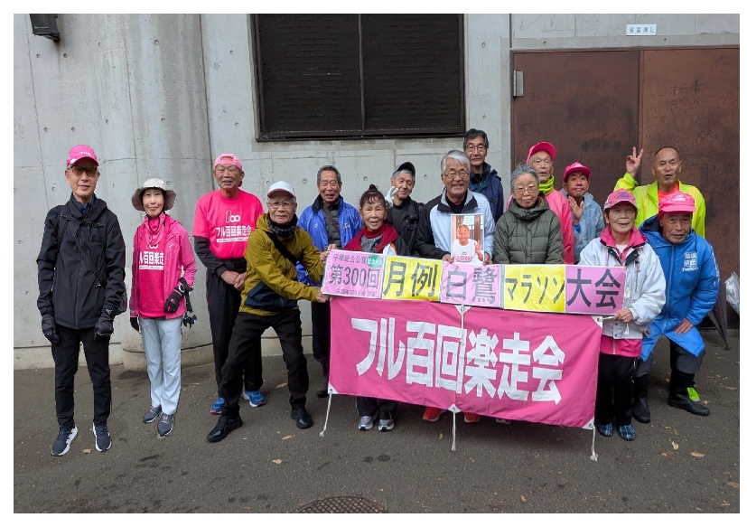
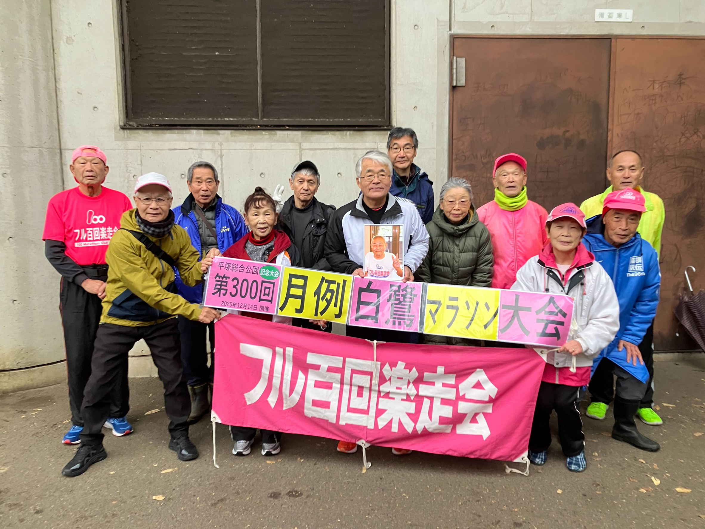

2025-12-14 18:10:55
2025年12月14日（日）平塚総合公園 雨～曇り 気温記録忘れ 担当（田中）
| No | 白鷺 | 氏名 | 種目 | タイム | フル百 |
|---|---|---|---|---|---|
| 1 | 19 | 伊藤 晶 | フル | 5:04:43 | 900 |
| 2 | 503 | 池尻 彰 | フル | 5:56:39 | 894 |
| 3 | 11 | 渡辺 富夫 | フル | 8:28:02 | 69 |
| 4 | 30 | 竹田 昭彦 | フル | 9:43:06 | 3 |
| 5 | 245 | 遠藤 眞規子 | 15.3km | 2:35:06 | 888 |
| 6 | 512 | 梅原 正子 | 15.3km | 3:25:00 | 100 |
| 7 | 340 | 島田 八十美 | 8.5km | 1:50:30 | 830 |
| 8 | 333 | 山口 義治 | 6.8km | 1:02:49 | 827 |
| 9 | 317 | 石井 功 | 6.8km | 3:30:00 | 817 |
| 10 | 98 | 田中 国貞 | 5.1km | 1:05:00 | 746 |
| 11 | 229 | 瀬戸 君子 | 5.1km | 1:14:00 | 749 |
| 12 | 203 | 坪田 弘美 | 5.1km | 1:14:00 | 148 |
| 13 | 145 | 植田 秀夫 | 3.4km | 0:24:00 | 787 |
| 14 | 349 | 宮野 繁 | 1.7km | 0:30:00 | 854 |
| 15 | 319 | 本内 克洋 | 1.7km | 0:35:00 | 839 |
| 16 | 227 | 松島 八十子 | 応援 | — | 748 |
| 17 | 208 | 古橋 和子 | 応援 | — | 565 |
あいにく冷たい雨日和となりましたが、17名参加で竹田さんはじめ4名がフル完走さ
れました。
9時10分から開会式を行いました。
・2001年立ち上げられ、２５年もの間我々を楽しませてくれ、10月19日急逝された吉
野前事務局長に感謝するとともにご冥福を祈り黙祷をささげました。
・山口会長からご挨拶をいただきました。
・全員写真撮影
又大勢の参加者からたくさんの差し入れをいただきました。ありがとうございまし
た。
竹田さんから 与論マラソン土産の黒糖焼酎
飯田さんから コーヒー、羊羹、クッキー
山口会長から クッキー
島田さんから フルーツ酒
池尻さんから 香川のお菓子
瀬戸さんから 手作りサンドウィッチ沢山
古橋さんから みかん1箱
宮野さんから お酒のおつまみ
洩れ、間違いがありましたらごめんなさい。
マラソン大会終了後、鎌倉へ移動し祝賀会＆忘年会を楽しみました。その報告は別途
します。

